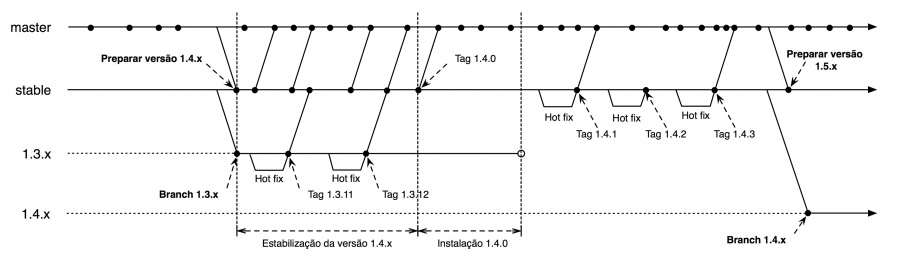

Nesta seção serão apresentados os processos de gestão de configuração do projeto.
A gerência de configuração é atividade exercida por três papéis, cujas responsabilidades são descritas na tabela abaixo.
Papel
Responsabilidades
Gerente de configuração ou integrador de configuração
i. elaborar e ajustar este documento;
i. elaborar e ajustar este documento;
ii. controlar as baselines dos produtos;
iii. realizar a integração (merge) junto às equipes de desenvolvimento;
iv. realizar auditorias para garantir o cumprimento das atividades de gerenciamento de configuração pelas equipes de trabalho;
v. informar o status da configuração;
vi. definir permissões de acesso aos repositórios;
vii. gerar tags;
viii. gerar branchs;
ix. gerar builds;
x. gerar releases
desenvolvedor i. respeitar as definições deste documento quando da elaboração ou modificação dos artefatos afetados pela gerência de configuração (itens de configuração) a ele atribuídos;
ii. realizar a integração (merge) com a gerência de configuração;
iii. gerar builds a pedido da gerência de configuração;
iv. gerar releases a pedido da gerência de configuração
Analista de sistema i. respeitar as definições deste documento quando da elaboração ou modificação dos artefatos afetados pela gerência de configuração (itens de configuração) a ele atribuídos.
Os documentos relacionados ao projeto PJe são mantidos nesta wiki, no testlink e no Redmine. O versionamento adotado para os documentos será o disponível nas ferramentas citadas. Os códigos fontes, assim como artefatos de banco de dados, são mantidos no GIT. Seguem direcionamentos a respeito do versionamento dos artefatos. Regras de Versionamento
O esquema de numeração de versões adotado pelo CNJ é baseado no esquema adotado pela organização Apache Foundation. O esquema define que uma versão é composta por quatro números inteiros, MAJOR.MINOR.MICRO.PATCH onde:
Número principal da versão, somente alterado quando: a)há modificação de arquitetura do sistema, ainda que não tenha havido modificação da estrutura de dados; b)há modificação da estrutura de dados que demanda uma migração significativa de uma base para outra base de dados, não sendo suficiente a mera concretização de scripts de migração de dados entre tabelas de um mesmo banco de dados. Esse número deve ser 0 para a versão anterior à primeira.
Número menor de versão, modificado sempre que houver inclusão de um ou mais conjuntos de novas funcionalidades. Esse número deve iniciar em 0 e deve ser reiniciado quando da troca do número principal.
Número micro de versão, modificado sempre que liberada uma versão de correção de erros ou de comportamento esperado na versão do sistema. Esse número deve iniciar em 0 e deve ser reiniciado quando da troca do número intermediário ou do número principal. Para versões intermediárias ou principais novas, antes da homologação, esse número deverá ser acrescido do milestone de liberação (M1, M2, M3 etc.) até que a versão seja homologada, quando receberá o número menor.
Número de correção de versão, modificado sempre que liberada uma versão de correção de erros críticos do sistema.
A Figura 5.1-1 apresenta em detalhes como o processo ocorre. O repositório possui dois branches principais: o master, que recebe todas as modificações planejadas para a próxima versão, e o stable, que representa a versão atual em produção. Quando a nova versão está prestes a ser lançada, é realizado um merge entre os branches master e stable. Neste mesmo momento, um branch para a versão atual é criado e mantido até que a nova versão estável esteja pronta para produção. Logo após o merge, inicia-se o período de estabilização da nova versão com o objetivo de corrigir eventuais bugs introduzidos pelas novas funcionalidades. Uma vez estável, uma tag é marcada e a versão está pronta para ser usada em produção e, após o lançamento da versão, inicia-se o ciclo de manutenção. FIGURA 5.1-1 
As versões intermediárias do sistema receberão o nome de município brasileiro iniciado na letra de referência da versão, estas na ordem alfabética, que não contenha espaços ou caracteres especiais, obtidos a partir do nome das unidades federativas, essas na ordem alfabética inversa. Assim, por exemplo, temos:
Versão Letra de referência Unidade Federativa Município existente na letra de referênciaAs bibliotecas ou projetos utilitários do sistema receberão sua numeração seguindo as seguintes regras:
X.Y.Z, onde:
X Número principal da versão, a ser alterada quando:a) opcionalmente, os desenvolvedores incluíram na versão substanciais alterações que melhoram as funcionalidades existentes; b) obrigatoriamente, quando a nova versão não é compatível, em nível de interface, com a versão de produção atual. A compatibilidade em nível de interface existe quando, substituída uma versão por outra em um projeto que somente faz uso das interfaces públicas da biblioteca, não há erro de compilação. Esse número deve ser 0 para a versão anterior à primeira.
Y Número intermediário de versão, a ser alterado quando há acréscimos de funcionalidades em relação à versão anterior e não foi mantida a compatibilidade em nível de interface. Esse número deve iniciar em 0 e reiniciado quando da troca do número principal.,
Z Número menor de versão, modificado sempre que liberada versão de correção de erros ou de comportamento esperado na versão do sistema. Esse número deve iniciar em 0 e reiniciado quando da troca do número intermediário ou do número principal. Para versões intermediárias ou principais novas, antes da homologação, esse número deverá ser acrescido do milestone de liberação (M1, M2, M3 etc.) até que a versão seja homologada, quando receberá o número menor.
Versões de banco de dados